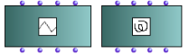
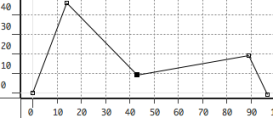
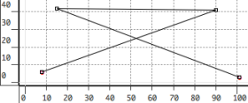
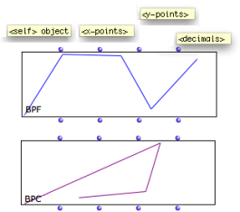
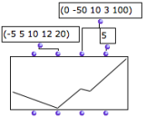
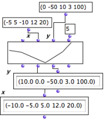
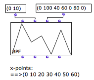
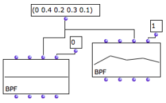

2D Objects : BPF / BPC
 The BPF and BPC boxes | OM offers two types of objects for the manipulation of 2D curves : the BPF and BPC objects – Break Point Function[1] and Break-Point Curve . |
Properties
A BPF represents a function as a set of 2D points with increasing x values. In the mathematical sense, a BPF can be considered as a function y = f(x). |  A break-point function defined by points (0 0), (14 46), (43 9), (89 19) and (97 , -1). |
 A break-point curve defined by points (8,6) (90,41) (15,42) and (101,3). | A BPC is a free curve defined in a 2D plane. |
 | BPF and BPC objects have four inputs and outputs :
|
Creating BPF or BPC in a Patch
The BPF or BPC points can be set by connecting lists of values to the "x-points" and "y-points" inputs, or with the BPF/BPC editor. |  |
 | In a BPF, x-points must be in a strictly increasing order. If the list is not ordered correctly, the points will be created from the y-points values and sorted automatically before the actual BPF is created. |
If the x or y list is shorter than the other, the last interval in the shorter list is repeated until the right number of points is reached. For instance, this allows to create a BPF with a list of y-points and a periodic x interval. |  |
 Rounding or increasing precision of the point coordinates with "decimals". | The " decimals" input determines the number of decimals per coordinates , that is, the precision of the curve. Coordinates are therefore rounded according to the number of decimals. If "decimals"= 0, all coordinates are rounded to the closest integer. |
- Break Point Function
A "break-point" function is a function defined by a finite number of points (x,y).